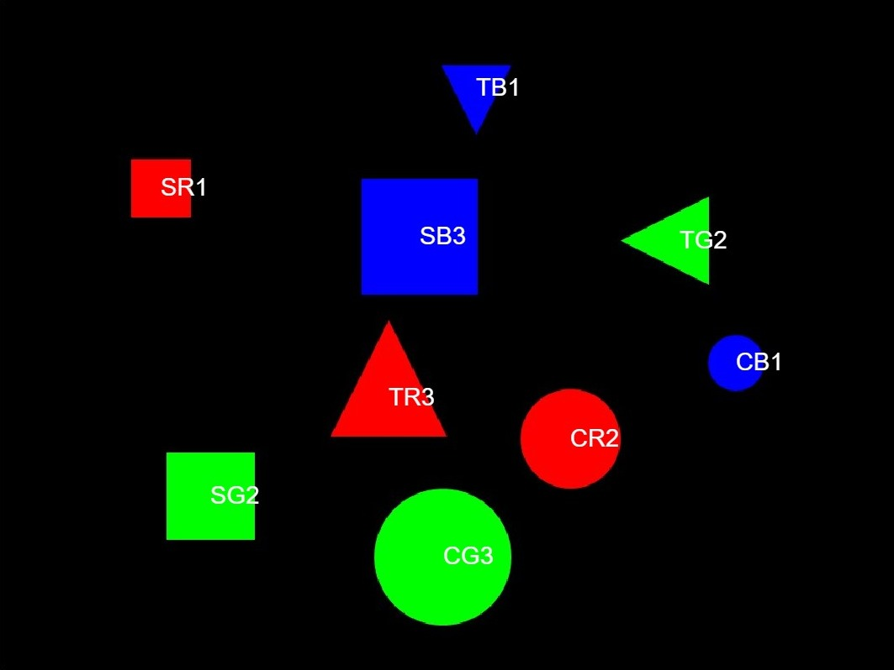
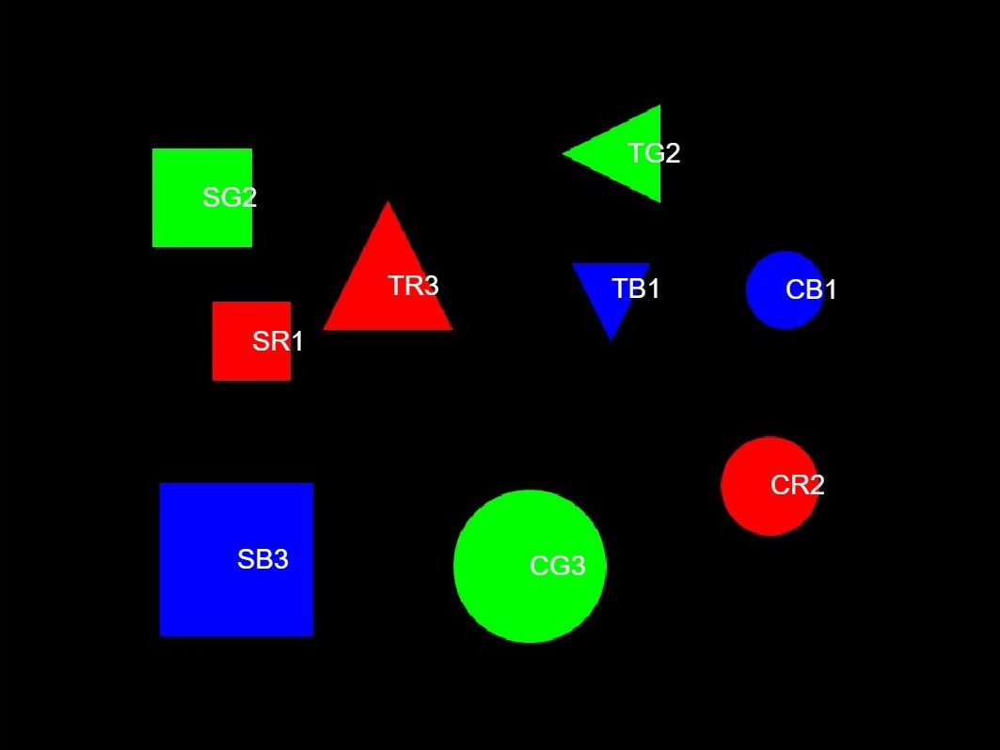
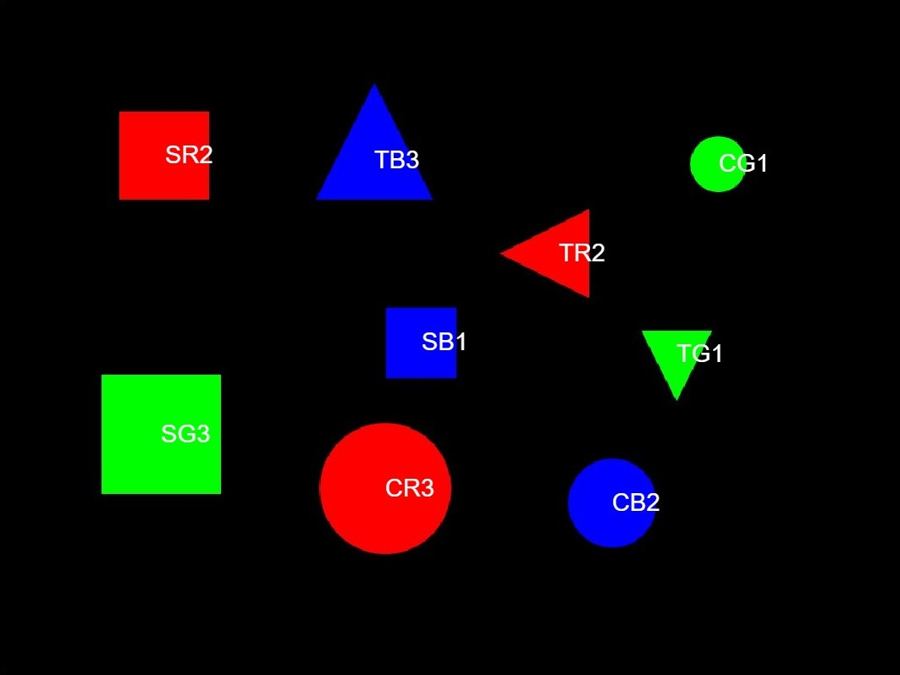
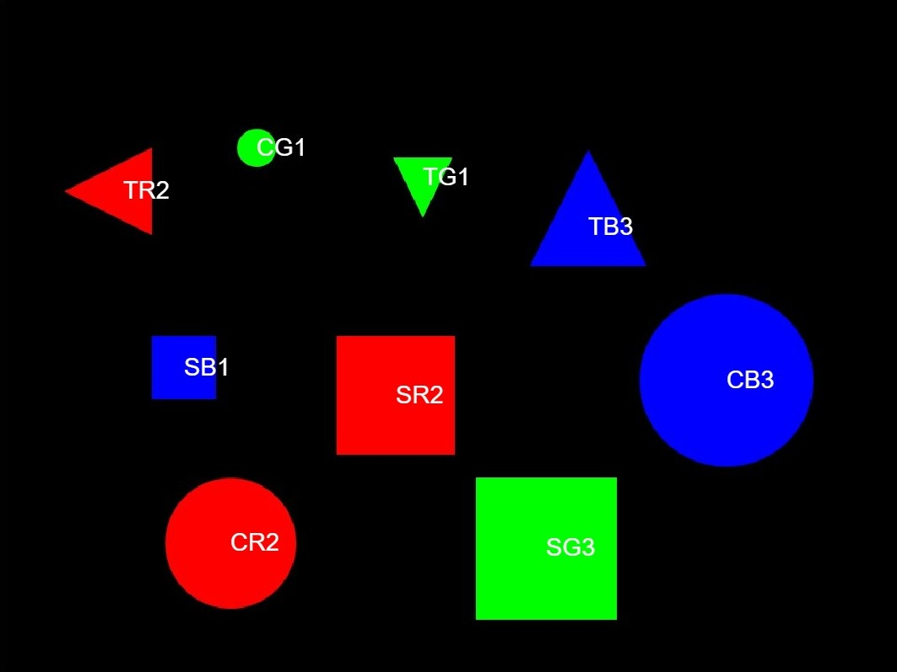
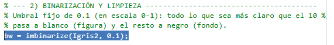
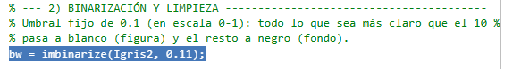

En una imagen de fondo negro hay nueve figuras colocadas al azar: tres círculos, tres triángulos y tres cuadrados,
de tres tamaños y tres colores distintos (rojo, verde y azul). El programa debe identificar cada figura y etiquetarla
con su forma (C círculo, T triángulo, S cuadrado) y su color (R, G, B).
También se ha hecho el apartado opcional: indicar si la figura es pequeña (1), mediana (2) o grande (3).
Por ejemplo, TG2 es un triángulo verde mediano.
Se ha partido del ejemplo de Atenea (ejemploVision.m), y la solución está en
Solucio_comentatV2.m.
rgb2gray) y se estira el
contraste (imadjust).imbinarize con un umbral fijo: lo que supera el umbral pasa a blanco (figura)
y el resto a negro (fondo).bwconncomp separa cada figura como un objeto, y regionprops
obtiene su área, su centroide y su circularidad.4π·Área / Perímetro², que vale 1 en un círculo
perfecto y baja cuanto más angulosa es la figura:
| Figura | Circularidad teórica | Criterio usado |
|---|---|---|
| Círculo | 1 | > 0,93 |
| Cuadrado | π/4 ≈ 0,785 | entre 0,74 y 0,93 |
| Triángulo equilátero | ≈ 0,605 | < 0,74 |
sortrows). La de menor área
recibe un 1, la siguiente un 2 y la mayor un 3.text se escribe la etiqueta forma + color + tamaño sobre cada figura.El programa se ha probado con las cuatro imágenes de prueba. En todas, las nueve figuras se etiquetan correctamente en forma, color y tamaño.




Con el umbral de binarización inicial de 0,1, en la imagen 3 un píxel suelto del fondo superaba el umbral y
quedaba en blanco. bwconncomp lo detectaba como un objeto más y, al ser un solo píxel, su circularidad
lo clasificaba como círculo. Así se obtenían 10 objetos en lugar de 9, y el programa no podía procesarlos, porque
la asignación de tamaños supone exactamente tres figuras de cada forma.
Para solucionarlo se subió el umbral de 0,1 a 0,11. Con este valor el píxel suelto queda por debajo del umbral, desaparece de la imagen binaria y se vuelven a detectar las 9 figuras.


Con unas pocas funciones de la Image Processing Toolbox (binarización, morfología, componentes conexas y
regionprops) se puede reconocer la forma, el color y el tamaño de cada figura. La circularidad permite
distinguir las tres formas sin que importe su tamaño. El caso de la imagen 3 muestra que el umbral de binarización es
un parámetro sensible: un solo píxel de ruido basta para cambiar el número de objetos detectados.